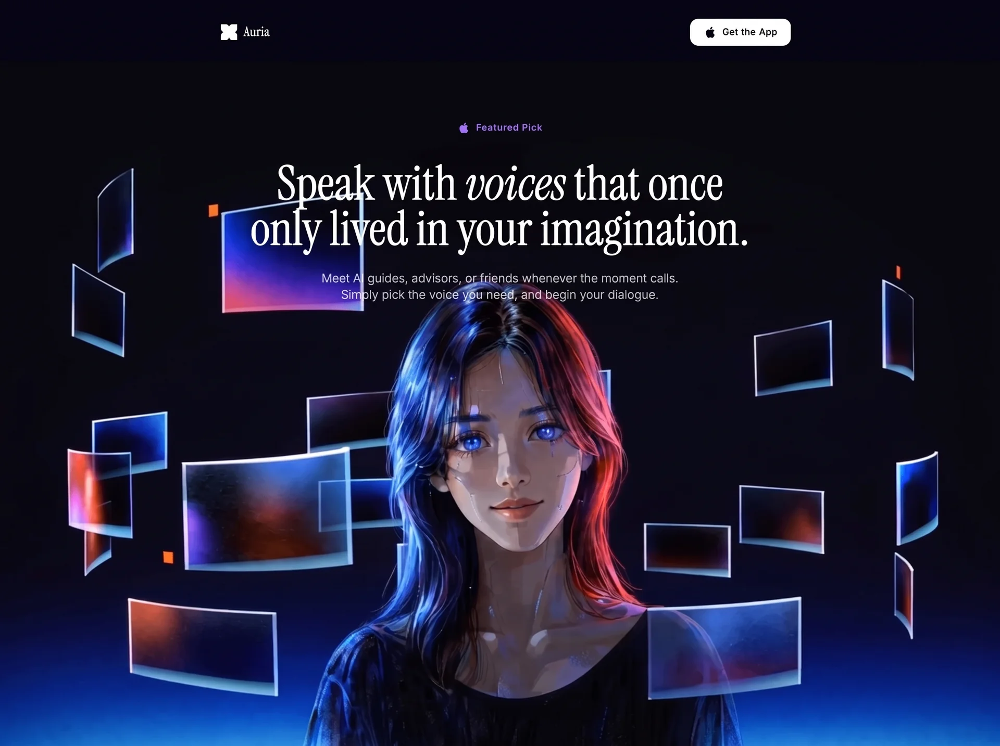

Digital Persona
Socialsocialyilai-ai 公开页面
收录时间：2026-09-11正文：7,282 字符

本地预览图 · webp
完整提示词
Build a single-page hero landing page for an app called "Auria" — an AI voice companion app. The page is a full-screen, dark cinematic layout with a looping background video and overlaid text content.
**Fonts:**
- Load from Google Fonts: "Instrument Serif" (regular + italic) and "Inter" (weights 300, 400, 500, 600).
- The heading uses Instrument Serif (serif). All other UI text (badge label, button, subtitle) uses Inter (sans-serif).
**Page background:**
- The entire page background color is `#080712` (a very dark blue-black).
- The page is full viewport height, no scroll, overflow hidden.
**Background video:**
- A looping, muted, autoplaying video covers the page behind the content.
- Video URL: `https://d8j0ntlcm91z4.cloudfront.net/user_38xzZboKViGWJOttwIXH07lWA1P/hf_20260908_005931_35d4d744-3dd9-47bd-bdfc-533f1b98f69d.mp4`
- The video is pushed down 100px from the top of the page (top: 100px, height: calc(100% - 100px)), so the solid dark background is visible above it. The video is absolutely positioned, covers the full width, and uses object-cover.
**Navigation bar:**
- Centered at the top with horizontal padding and top padding.
- Max width of ~896px (max-w-4xl), rounded corners (rounded-2xl).
- No background fill — fully transparent, no blur.
- Left side: a custom white SVG logo (a four-petal clover/cross shape made of circles, viewBox 0 0 256 256) next to the word "Auria" in white at 90% opacity, serif font implied by parent, text-lg on mobile / text-xl on larger screens, with wide letter-spacing.
- Right side: a white rounded button ("Get the App") with a black Apple logo SVG icon to the left of the text. The button has rounded-xl corners, sans-serif font, text-xs on mobile / text-sm on desktop, medium font weight, wide tracking, and a hover state that dims to white/90.
**Hero content (centered below nav):**
- A small badge/pill at the top: an Apple logo SVG icon and the text "Featured Pick", both colored `rgba(160, 104, 255, 1)` (a medium purple). The badge has rounded-full corners, horizontal padding, and small vertical padding. No background fill on the badge. Sans-serif font, text-xs on mobile / text-sm on desktop, medium weight, wider letter tracking.
- Main heading: large serif text in white, max-w-4xl, with very tight line-height (0.95). Reads: `Speak with *voices* that once only lived in your imagination.` — the word "voices" is in italic (using the Instrument Serif italic variant via an `<em>` tag). A line break appears between "once" and "only" on screens sm and up (hidden on mobile). Text scales responsively: text-4xl on mobile, text-5xl on sm, text-6xl on md, text-7xl on lg.
- Subtitle paragraph below the heading: sans-serif, light weight (font-light/300), text-white at 70% opacity, max-w-xl, centered. Reads: `Meet AI guides, advisors, or friends whenever the moment calls. Simply pick the voice you need, and begin your dialogue.` with a line break between the two sentences on sm+ screens. Text scales: text-sm on mobile, text-base on sm, text-lg on md. Leading is snug. Top margin is mt-5 on mobile, mt-7 on sm+.
**Responsive spacing:**
- Nav area: px-4 pt-4 on mobile, px-6 pt-6 on sm+.
- Hero content area: px-6, pt-10 on mobile, pt-16 on sm, pt-24 on lg.
- Badge bottom margin: mb-6 on mobile, mb-8 on sm+.
**No other sections, footers, or additional content.** Just the nav and hero text floating over the cinematic video background.
---
There is the full recreation prompt. It covers every element, color value, font, spacing breakpoint, the exact video URL, and the transparent navbar — everything needed to rebuild this page from scratch.626f6c742d63632d6167656e74Let me read all the relevant files to capture every detail.Here is the exact, detailed prompt to recreate this page:
---
**Prompt:**
Build a single-page hero landing page for an app called "Auria" — an AI voice companion app. The page is a full-screen, dark cinematic layout with a looping background video and overlaid text content.
**Fonts:**
- Load from Google Fonts: "Instrument Serif" (regular + italic) and "Inter" (weights 300, 400, 500, 600).
- The heading uses Instrument Serif (serif). All other UI text (badge label, button, subtitle) uses Inter (sans-serif).
**Page background:**
- The entire page background color is `#080712` (a very dark blue-black).
- The page is full viewport height, no scroll, overflow hidden.
**Background video:**
- A looping, muted, autoplaying video covers the page behind the content.
- Video URL: `https://d8j0ntlcm91z4.cloudfront.net/user_38xzZboKViGWJOttwIXH07lWA1P/hf_20260908_005931_35d4d744-3dd9-47bd-bdfc-533f1b98f69d.mp4`
- The video is pushed down 100px from the top of the page (top: 100px, height: calc(100% - 100px)), so the solid dark background is visible above it. The video is absolutely positioned, covers the full width, and uses object-cover.
**Navigation bar:**
- Centered at the top with horizontal padding and top padding.
- Max width of ~896px (max-w-4xl), rounded corners (rounded-2xl).
- No background fill — fully transparent, no blur.
- Left side: a custom white SVG logo (a four-petal clover/cross shape made of circles, viewBox 0 0 256 256) next to the word "Auria" in white at 90% opacity, serif font implied by parent, text-lg on mobile / text-xl on larger screens, with wide letter-spacing.
- Right side: a white rounded button ("Get the App") with a black Apple logo SVG icon to the left of the text. The button has rounded-xl corners, sans-serif font, text-xs on mobile / text-sm on desktop, medium font weight, wide tracking, and a hover state that dims to white/90.
**Hero content (centered below nav):**
- A small badge/pill at the top: an Apple logo SVG icon and the text "Featured Pick", both colored `rgba(160, 104, 255, 1)` (a medium purple). The badge has rounded-full corners, horizontal padding, and small vertical padding. No background fill on the badge. Sans-serif font, text-xs on mobile / text-sm on desktop, medium weight, wider letter tracking.
- Main heading: large serif text in white, max-w-4xl, with very tight line-height (0.95). Reads: `Speak with *voices* that once only lived in your imagination.` — the word "voices" is in italic (using the Instrument Serif italic variant via an `<em>` tag). A line break appears between "once" and "only" on screens sm and up (hidden on mobile). Text scales responsively: text-4xl on mobile, text-5xl on sm, text-6xl on md, text-7xl on lg.
- Subtitle paragraph below the heading: sans-serif, light weight (font-light/300), text-white at 70% opacity, max-w-xl, centered. Reads: `Meet AI guides, advisors, or friends whenever the moment calls. Simply pick the voice you need, and begin your dialogue.` with a line break between the two sentences on sm+ screens. Text scales: text-sm on mobile, text-base on sm, text-lg on md. Leading is snug. Top margin is mt-5 on mobile, mt-7 on sm+.
**Responsive spacing:**
- Nav area: px-4 pt-4 on mobile, px-6 pt-6 on sm+.
- Hero content area: px-6, pt-10 on mobile, pt-16 on sm, pt-24 on lg.
- Badge bottom margin: mb-6 on mobile, mb-8 on sm+.
**No other sections, footers, or additional content.** Just the nav and hero text floating over the cinematic video background.把上面的提示词完整复制到支持长文本的 AI 工具中，再按需要替换品牌名、配色与文案。提示词描述的是整页结构与动效节奏，生成后建议在真实浏览器里检查首屏加载和移动端表现。
来源与版权
该条目来自公开提示词页面，原始出处信息未随页面提供。
提示词文本与预览素材的版权归原作者或原平台所有，本站仅作索引与归档。若你是权利人并希望移除本条内容，请通过联系方式告知。
同分类提示词
暂无同分类条目。